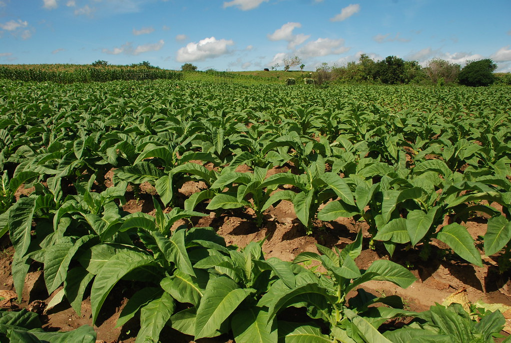
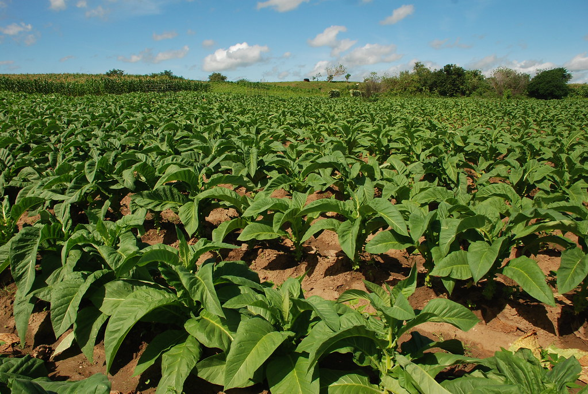

Plantas industriais:cana-de-açúcar e fumo
A cana-de-açúcar, essa gramínea, de origem hindu, é a primeira lavoura da história do Brasil. A cana-de-açúcar oferece matéria-prima para a industrialização do açúcar, o álcool, a rapadura e demais produtos também. A cana foi uma das principais alternativas do Norte do Paraná que vivia basicamente do café até a década de 1970. Após a geada negra de 1975, muitos cafezais se transformaram em canaviais. No Paraná, as microrregiões que mais produzem cana-de-açúcar são as de Astorga, Jacarezinho, Cianorte, Cornélio Procópio, Porecatu, Paranavaí, Campo Mourão e Ivaiporã. Merece destaque o município de Jacarezinho, que na safra 2019/2020 produziu 1,5 milhão de toneladas de cana. A região abriga cerca de 33 mil hectares de canaviais. A matéria-prima local tem como principais destinos a indústria de açúcar, de etanol e serve ainda como fonte de energia com a queima do bagaço e a transformação em biomassa. O Paraná nos últimos anos foi considerado o quinto maior produtor de cana do Brasil, com 34,3 milhões de toneladas na safra 2019/2020. As folhas do fumo ou tabaco, devido ao seu preparo, são usadas para a satisfação das necessidades de matéria-prima dos que fabricam cigarros. As microrregiões que mais produzem fumo são as de Prudentópolis, Irati, Rio Negro, São Mateus do Sul, União da Vitória, Capanema, Foz do Iguaçu e Francisco Beltrão.
 
